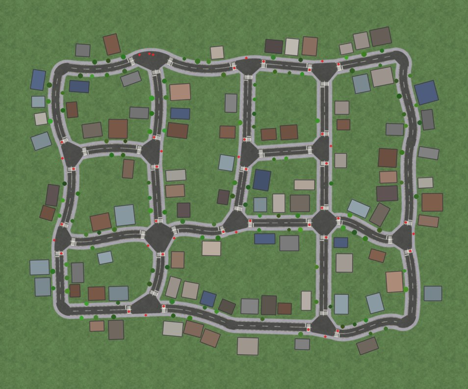
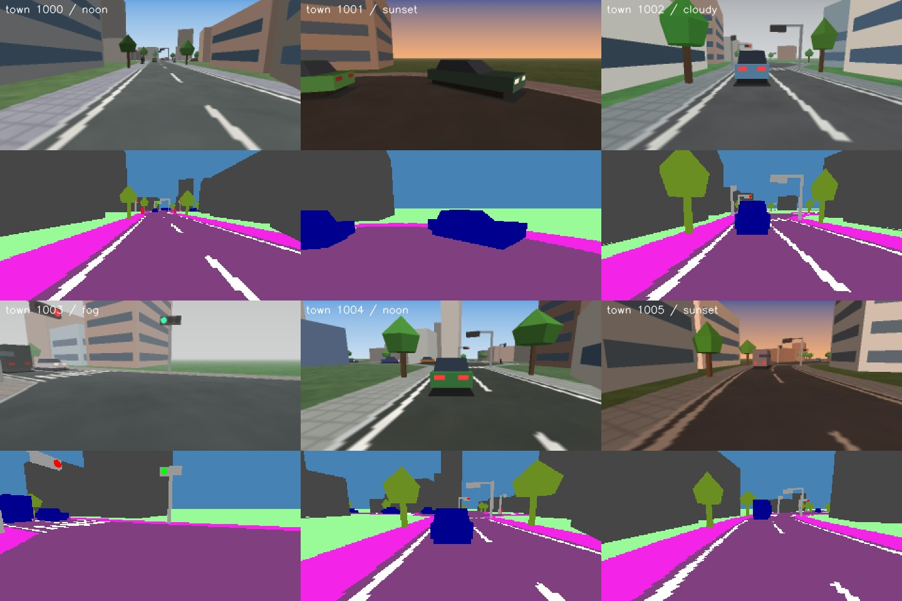

<title>KeiSim × KeiPilot</title>
<meta name="description" content="軽量クローズドループ自動運転環境: 手続き生成の街シミュレータとカメラ単眼 E2E モデル">
<link rel="preconnect" href="https://fonts.googleapis.com">
<link rel="preconnect" href="https://fonts.gstatic.com" crossorigin>
<link rel="stylesheet" href="https://fonts.googleapis.com/css2?family=IBM+Plex+Mono:wght@400;500&family=IBM+Plex+Sans+JP:wght@400;500;600&family=Zen+Kaku+Gothic+New:wght@700;900&display=swap">
<style>
:root{
  --bg:#EFF0EC; --surface:#FBFBF9; --ink:#1B1F23; --ink-2:#4F5860; --ink-3:#7A838B; --line:#D5D9D6;
  --asphalt:#2B3035; --paint:#FFFFFF; --kei:#F0B90B; --kei-ink:#191B1D; --kei-soft:#FBEFC7;
  --go:#0B8F6C; --caution:#B87700; --stop:#C7402C;
  --go-bg:#DCF1EA; --caution-bg:#F8EBD2; --stop-bg:#F7DFDA;
  --bar0:#8C969E; --bar1:#3E4A55; --bar2:#E0A800;
  --code:#23282D; --code-ink:#E8EBED;
  --display:"Zen Kaku Gothic New","Hiragino Kaku Gothic ProN","Noto Sans JP","Yu Gothic",sans-serif;
  --body:"IBM Plex Sans JP","Hiragino Sans","Noto Sans JP","Yu Gothic",system-ui,sans-serif;
  --mono:"IBM Plex Mono",ui-monospace,SFMono-Regular,Menlo,Consolas,monospace;
}
@media (prefers-color-scheme: dark){
  :root:not([data-theme="light"]){
    color-scheme:dark;
    --bg:#14171A; --surface:#1C2024; --ink:#E6E9EA; --ink-2:#A7B0B7; --ink-3:#7F8991; --line:#2E353A;
    --asphalt:#0E1012; --kei:#F3C434; --kei-soft:#3A3217;
    --go:#3CCB9E; --caution:#F0B444; --stop:#F2735F;
    --go-bg:#15352C; --caution-bg:#3A2E14; --stop-bg:#3B1E19;
    --bar0:#7C868E; --bar1:#9FB0BF; --bar2:#F3C434;
    --code:#0F1214; --code-ink:#DDE2E5;
  }
}
:root[data-theme="dark"]{
  color-scheme:dark;
  --bg:#14171A; --surface:#1C2024; --ink:#E6E9EA; --ink-2:#A7B0B7; --ink-3:#7F8991; --line:#2E353A;
  --asphalt:#0E1012; --kei:#F3C434; --kei-soft:#3A3217;
  --go:#3CCB9E; --caution:#F0B444; --stop:#F2735F;
  --go-bg:#15352C; --caution-bg:#3A2E14; --stop-bg:#3B1E19;
  --bar0:#7C868E; --bar1:#9FB0BF; --bar2:#F3C434;
  --code:#0F1214; --code-ink:#DDE2E5;
}
*{box-sizing:border-box}
body{background:var(--bg);color:var(--ink);font-family:var(--body);font-size:15px;line-height:1.75;margin:0}
.wrap{max-width:1080px;margin:0 auto;padding-inline:20px;padding-block:28px 72px}
h1,h2,h3{font-family:var(--display);line-height:1.25;text-wrap:balance;margin:0}
h1{font-size:clamp(34px,6vw,56px);font-weight:900;letter-spacing:.01em}
h2{font-size:clamp(22px,3vw,28px);font-weight:900;margin-bottom:6px}
h3{font-size:17px;font-weight:700;margin-bottom:4px}
p{margin:0}
.prose{max-width:68ch}
div.prose{display:grid;gap:12px}
.muted{color:var(--ink-3)}
a{color:inherit;text-decoration-color:var(--kei);text-decoration-thickness:2px;text-underline-offset:3px}
code,.mono{font-family:var(--mono);font-size:.92em}
section{margin-top:64px;display:grid;gap:18px}
.eyebrow{font-family:var(--mono);font-size:12px;letter-spacing:.08em;text-transform:uppercase;color:var(--ink-3)}

/* masthead: kei-car yellow plate */
.masthead{display:grid;grid-template-columns:auto 1fr;gap:26px;align-items:center;padding-bottom:26px;border-bottom:1px solid var(--line)}
.plate{width:118px;aspect-ratio:2/1;max-width:100%;background:var(--kei);border-radius:10px;display:grid;place-items:center;
  box-shadow:inset 0 0 0 3px color-mix(in srgb,var(--kei-ink) 70%,transparent),inset 0 0 0 6px var(--kei)}
.plate span{font-family:var(--display);font-weight:900;font-size:40px;color:var(--kei-ink);line-height:1}
.lede{font-size:17px;color:var(--ink-2);max-width:62ch;margin-top:10px}
.lede strong{color:var(--ink);background:linear-gradient(transparent 62%,var(--kei-soft) 62%)}
@media (max-width:620px){.masthead{grid-template-columns:1fr}.plate{width:96px}}

/* key figures */
.figures{display:grid;grid-template-columns:repeat(4,minmax(0,1fr));gap:1px;background:var(--line);border:1px solid var(--line);border-radius:6px;overflow:hidden;margin-top:28px}
.fig{background:var(--surface);padding:16px 18px;display:grid;gap:2px;align-content:start}
.fig .n{font-family:var(--mono);font-weight:500;font-size:clamp(24px,3.4vw,34px);font-variant-numeric:tabular-nums;letter-spacing:-.01em}
.fig .l{font-size:13px;color:var(--ink-2);line-height:1.5}
.fig .n small{font-size:.5em;color:var(--ink-3);margin-left:2px}
@media (max-width:760px){.figures{grid-template-columns:repeat(2,minmax(0,1fr))}}

/* road-lane divider under section headers */
.lane{height:6px;background:repeating-linear-gradient(90deg,var(--ink) 0 22px,transparent 22px 36px);opacity:.14;border-radius:2px;max-width:220px}

/* videos */
.clips{display:grid;grid-template-columns:repeat(auto-fit,minmax(min(100%,440px),1fr));gap:18px}
.clip{margin:0;display:grid;gap:8px}
.clip video{width:100%;max-width:100%;aspect-ratio:2/1;background:var(--asphalt);border-radius:6px;display:block}
.clip figcaption{font-size:13px;color:var(--ink-2)}

/* tables */
.tablebox{overflow-x:auto;border:1px solid var(--line);border-radius:6px;background:var(--surface)}
table{border-collapse:collapse;width:100%;font-size:14px}
th,td{padding:10px 14px;text-align:left;border-bottom:1px solid var(--line);vertical-align:middle;white-space:nowrap}
thead th{font-size:12px;font-weight:600;color:var(--ink-2);background:color-mix(in srgb,var(--surface) 70%,var(--bg))}
thead th .sub,th .sub{display:block;font-weight:400;font-size:11.5px;color:var(--ink-3)}
tbody tr:last-child>*{border-bottom:0}
.num{text-align:right;font-family:var(--mono);font-variant-numeric:tabular-nums}
.agent{display:block;font-weight:600}
.ds{display:inline-block;min-width:64px;text-align:center;padding:2px 8px;border-radius:999px;font-weight:500}
.ds.good{background:var(--go-bg);color:var(--go)}
.ds.warn{background:var(--caution-bg);color:var(--caution)}
.ds.bad{background:var(--stop-bg);color:var(--stop)}
.st{font-family:var(--mono);font-size:12px;color:var(--ink-2)}
details{border:1px solid var(--line);border-radius:6px;background:var(--surface)}
details>summary{cursor:pointer;padding:10px 14px;font-weight:600;font-size:14px}
details[open]>summary{border-bottom:1px solid var(--line)}
details .tablebox{border:0;border-radius:0}

/* chart */
.chartbox{background:var(--surface);border:1px solid var(--line);border-radius:6px;padding:14px 14px 6px;overflow-x:auto}
.chart{width:100%;min-width:520px;height:auto;display:block}
.chart .grid{stroke:var(--line);stroke-width:1}
.chart .tick{fill:var(--ink-3);font:11px var(--mono)}
.chart .cat{fill:var(--ink);font:600 12.5px var(--body)}
.chart .val{fill:var(--ink-2);font:11px var(--mono)}
.chart .muted{fill:var(--ink-3)}
.chart .a0{fill:var(--bar0)} .chart .a1{fill:var(--bar1)} .chart .a2{fill:var(--bar2)}
.legend{display:flex;flex-wrap:wrap;gap:16px;font-size:13px;color:var(--ink-2)}
.legend i{display:inline-block;width:12px;height:12px;border-radius:2px;margin-right:6px;vertical-align:-1px}

/* two-column blocks */
.cols{display:grid;grid-template-columns:repeat(auto-fit,minmax(min(100%,300px),1fr));gap:22px}
.card{background:var(--surface);border:1px solid var(--line);border-radius:6px;padding:16px 18px;display:grid;gap:8px;align-content:start}
.card p,.card li{font-size:14px;color:var(--ink-2)}
.card ul{margin:0;padding-left:1.1em;display:grid;gap:4px}
.kv{display:grid;grid-template-columns:auto 1fr auto;gap:4px 14px;font-size:14px;align-items:baseline}
.kv .k{color:var(--ink-2)} .kv .v{font-family:var(--mono);font-variant-numeric:tabular-nums;text-align:right}
.kv .arrow{color:var(--ink-3);font-family:var(--mono);font-size:12px}

.iou{display:grid;grid-template-columns:7em 1fr 3.2em;gap:10px;align-items:center;font-size:13px}
.iou-bar{height:8px;background:color-mix(in srgb,var(--line) 70%,transparent);border-radius:4px;overflow:hidden}
.iou-bar i{display:block;height:100%;background:var(--bar1)}
.iou-val{font-family:var(--mono);text-align:right;font-variant-numeric:tabular-nums;color:var(--ink-2)}

/* pipeline diagram */
.diagram{background:var(--surface);border:1px solid var(--line);border-radius:6px;padding:12px;overflow-x:auto}
.diagram svg{width:100%;min-width:640px;height:auto;display:block}
.diagram .box{fill:var(--bg);stroke:var(--line);stroke-width:1.2}
.diagram .box.hot{fill:var(--kei-soft);stroke:var(--kei)}
.diagram .t{fill:var(--ink);font:600 13px var(--body)}
.diagram .s{fill:var(--ink-2);font:11.5px var(--body)}
.diagram .ar{stroke:var(--ink-3);stroke-width:1.4;fill:none}
.diagram .arh{fill:var(--ink-3)}
.diagram .loop{stroke:var(--kei);stroke-width:2;fill:none;stroke-dasharray:5 4}
.diagram .loopt{fill:var(--caution);font:600 12px var(--body)}

.gallery{width:100%;max-width:100%;border-radius:6px;border:1px solid var(--line);display:block}
pre{background:var(--code);color:var(--code-ink);border-radius:6px;padding:14px 16px;overflow-x:auto;font-size:13px;line-height:1.6;margin:0}
pre .c{color:#8C979F}
.note{border-left:3px solid var(--kei);padding:4px 0 4px 14px;color:var(--ink-2);font-size:14px;max-width:72ch}
footer{margin-top:72px;padding-top:18px;border-top:1px solid var(--line);font-size:12.5px;color:var(--ink-3)}
:focus-visible{outline:2px solid var(--kei);outline-offset:2px}
@media (prefers-reduced-motion:reduce){*{scroll-behavior:auto}}
</style>

<main class="wrap">
  <header class="masthead">
    <div class="plate" aria-hidden="true"><span>軽</span></div>
    <div>
      <p class="eyebrow">軽量クローズドループ自動運転環境 · 2026-09-23</p>
      <h1>KeiSim × KeiPilot</h1>
      <p class="lede">見た目のリアルさを追う競争をやめて、<strong>シミュレータとモデルを一体で設計</strong>しました。numpy と OpenCV だけで動く街シミュレータと、その世界で特権エキスパートから学んだカメラ単眼モデル (14.9M パラメータ) の組み合わせです。</p>
    </div>
  </header>

  <div class="figures" role="list">
    <div class="fig" role="listitem"><span class="n">0.963</span><span class="l">Driving Score<br>未見の街 40 ルート (DAgger)</span></div>
    <div class="fig" role="listitem"><span class="n">100.0%</span><span class="l">ルート完走率<br>24.3 km 中の衝突 0 件</span></div>
    <div class="fig" role="listitem"><span class="n">29.8<small>×</small></span><span class="l">実時間比 (1 プロセス)<br>カメラ描画込みで 13.1×</span></div>
    <div class="fig" role="listitem"><span class="n">14.9<small>M</small></span><span class="l">モデルのパラメータ数<br>RTX 3060 で 1 フレーム 6.6 ms</span></div>
  </div>

  <section id="drive">
    <div class="lane" aria-hidden="true"></div>
    <h2>未見の街を走る</h2>
    <p class="prose muted">学習に一度も使っていない街でのクローズドループ走行です。左上がモデルへの入力 (カメラ 320×160)、緑がエキスパートの経路、マゼンタがモデルの予測経路。左下はモデル自身が推定したセマンティックセグメンテーション、右は BEV (評価用の真値) です。</p>
    <div class="clips">
<figure class="clip"><video src="clip_pedestrian_fog.mp4" poster="clip_pedestrian_fog.jpg" controls muted playsinline loop preload="metadata"></video><figcaption>未見の街 1000 · 霧 — 前方の横断歩行者を検出して減速</figcaption></figure>
<figure class="clip"><video src="clip_redlight_sunset.mp4" poster="clip_redlight_sunset.jpg" controls muted playsinline loop preload="metadata"></video><figcaption>未見の街 1004 · 夕焼け — 36 km/h から赤信号で停止し、青で発進</figcaption></figure>
<figure class="clip"><video src="clip_redlight_turn.mp4" poster="clip_redlight_turn.jpg" controls muted playsinline loop preload="metadata"></video><figcaption>未見の街 1001 · 晴れ — 赤信号で停止線の手前に止まり、青になってから右折 (対向車線を横切る右折)</figcaption></figure>
    </div>
  </section>

  <section id="bench">
    <div class="lane" aria-hidden="true"></div>
    <h2>クローズドループ評価</h2>
    <p class="prose">各スイートは <code>(town_seed, episode_seed)</code> で完全に固定された 600 m ルート 20 本です (地図・経路・交通・歩行者・信号位相・天候まで再現)。Driving Score = ルート完走率 × 違反ペナルティ (CARLA Leaderboard と同じ形。車両衝突 ×0.60、歩行者 ×0.50、静止物 ×0.65、信号無視 ×0.70)。衝突した時点でルートは打ち切りです。</p>
    <div class="tablebox">
      <table>
        <thead><tr><th>エージェント</th>
          <th class="num">未見の街 A<span class="sub">town 1000–1004</span></th>
          <th class="num">未見の街 B<span class="sub">town 1005–1009</span></th>
          <th class="num">既知の街・新ルート<span class="sub">学習時の街</span></th>
          <th class="num">高密度交通<span class="sub">車両/歩行者 ~2 倍</span></th></tr></thead>
        <tbody>
<tr><th scope="row"><span class="agent">特権エキスパート</span><span class="sub">privileged (正解情報を使用)</span></th><td class="num"><span class="ds good">1.000</span></td><td class="num"><span class="ds good">1.000</span></td><td class="num"><span class="ds good">1.000</span></td><td class="num"><span class="ds good">1.000</span></td></tr>
<tr><th scope="row"><span class="agent">KeiPilot · BC</span><span class="sub">カメラのみ・模倣学習</span></th><td class="num"><span class="ds warn">0.945</span></td><td class="num"><span class="ds warn">0.871</span></td><td class="num"><span class="ds good">0.985</span></td><td class="num"><span class="ds bad">0.798</span></td></tr>
<tr><th scope="row"><span class="agent">KeiPilot · DAgger</span><span class="sub">カメラのみ・+ オンポリシー学習</span></th><td class="num"><span class="ds good">0.970</span></td><td class="num"><span class="ds good">0.955</span></td><td class="num"><span class="ds good">0.970</span></td><td class="num"><span class="ds warn">0.921</span></td></tr>
        </tbody>
      </table>
    </div>
    <div class="chartbox">
      <div class="legend"><span><i style="background:var(--bar0)"></i>特権エキスパート</span><span><i style="background:var(--bar1)"></i>KeiPilot · BC</span><span><i style="background:var(--bar2)"></i>KeiPilot · DAgger</span></div>
<svg viewBox="0 0 640 298" role="img" aria-label="Driving Score の比較" class="chart">
<line x1="150.0" y1="18" x2="150.0" y2="276" class="grid"/>
<text x="150.0" y="292" class="tick" text-anchor="middle">0.00</text>
<line x1="258.5" y1="18" x2="258.5" y2="276" class="grid"/>
<text x="258.5" y="292" class="tick" text-anchor="middle">0.25</text>
<line x1="367.0" y1="18" x2="367.0" y2="276" class="grid"/>
<text x="367.0" y="292" class="tick" text-anchor="middle">0.50</text>
<line x1="475.5" y1="18" x2="475.5" y2="276" class="grid"/>
<text x="475.5" y="292" class="tick" text-anchor="middle">0.75</text>
<line x1="584.0" y1="18" x2="584.0" y2="276" class="grid"/>
<text x="584.0" y="292" class="tick" text-anchor="middle">1.00</text>
<text x="138" y="53.5" class="cat" text-anchor="end">未見の街 A</text>
<rect x="150" y="26" width="434.0" height="13" rx="2" class="bar a0"/>
<text x="589.0" y="37" class="val">1.000</text>
<rect x="150" y="43" width="409.9" height="13" rx="2" class="bar a1"/>
<text x="564.9" y="54" class="val">0.945</text>
<rect x="150" y="60" width="421.0" height="13" rx="2" class="bar a2"/>
<text x="576.0" y="71" class="val">0.970</text>
<text x="138" y="118.5" class="cat" text-anchor="end">未見の街 B</text>
<rect x="150" y="91" width="434.0" height="13" rx="2" class="bar a0"/>
<text x="589.0" y="102" class="val">1.000</text>
<rect x="150" y="108" width="378.1" height="13" rx="2" class="bar a1"/>
<text x="533.1" y="119" class="val">0.871</text>
<rect x="150" y="125" width="414.5" height="13" rx="2" class="bar a2"/>
<text x="569.5" y="136" class="val">0.955</text>
<text x="138" y="183.5" class="cat" text-anchor="end">既知の街・新ルート</text>
<rect x="150" y="156" width="434.0" height="13" rx="2" class="bar a0"/>
<text x="589.0" y="167" class="val">1.000</text>
<rect x="150" y="173" width="427.5" height="13" rx="2" class="bar a1"/>
<text x="582.5" y="184" class="val">0.985</text>
<rect x="150" y="190" width="421.0" height="13" rx="2" class="bar a2"/>
<text x="576.0" y="201" class="val">0.970</text>
<text x="138" y="248.5" class="cat" text-anchor="end">高密度交通</text>
<rect x="150" y="221" width="434.0" height="13" rx="2" class="bar a0"/>
<text x="589.0" y="232" class="val">1.000</text>
<rect x="150" y="238" width="346.3" height="13" rx="2" class="bar a1"/>
<text x="501.3" y="249" class="val">0.798</text>
<rect x="150" y="255" width="399.8" height="13" rx="2" class="bar a2"/>
<text x="554.8" y="266" class="val">0.921</text>
</svg>
    </div>
    <details>
      <summary>詳細 (RC / 成功率 / 違反 per km / 平均速度 / 終了状態)</summary>
      <div class="tablebox">
        <table>
          <thead><tr><th>エージェント</th><th>スイート</th><th class="num">DS</th><th class="num">RC</th><th class="num">成功</th><th class="num">km</th><th class="num">信号無視/km</th><th class="num">衝突/km</th><th class="num">平均 km/h</th><th>終了状態</th></tr></thead>
          <tbody>
<tr><td>特権エキスパート</td><td>未見の街 A</td><td class="num">1.000</td><td class="num">1.000</td><td class="num">100%</td><td class="num">12.1</td><td class="num">0.00</td><td class="num">0.00</td><td class="num">13.7</td><td class="st">success 20</td></tr>
<tr><td>特権エキスパート</td><td>未見の街 B</td><td class="num">1.000</td><td class="num">1.000</td><td class="num">100%</td><td class="num">12.2</td><td class="num">0.00</td><td class="num">0.00</td><td class="num">12.5</td><td class="st">success 20</td></tr>
<tr><td>特権エキスパート</td><td>既知の街・新ルート</td><td class="num">1.000</td><td class="num">1.000</td><td class="num">100%</td><td class="num">12.1</td><td class="num">0.00</td><td class="num">0.00</td><td class="num">14.8</td><td class="st">success 20</td></tr>
<tr><td>特権エキスパート</td><td>高密度交通</td><td class="num">1.000</td><td class="num">1.000</td><td class="num">100%</td><td class="num">12.1</td><td class="num">0.00</td><td class="num">0.00</td><td class="num">8.8</td><td class="st">success 20</td></tr>
<tr><td>KeiPilot · BC</td><td>未見の街 A</td><td class="num">0.945</td><td class="num">1.000</td><td class="num">100%</td><td class="num">12.1</td><td class="num">0.33</td><td class="num">0.00</td><td class="num">13.9</td><td class="st">success 20</td></tr>
<tr><td>KeiPilot · BC</td><td>未見の街 B</td><td class="num">0.871</td><td class="num">1.000</td><td class="num">100%</td><td class="num">12.2</td><td class="num">0.82</td><td class="num">0.00</td><td class="num">13.1</td><td class="st">success 20</td></tr>
<tr><td>KeiPilot · BC</td><td>既知の街・新ルート</td><td class="num">0.985</td><td class="num">1.000</td><td class="num">100%</td><td class="num">12.2</td><td class="num">0.08</td><td class="num">0.00</td><td class="num">14.4</td><td class="st">success 20</td></tr>
<tr><td>KeiPilot · BC</td><td>高密度交通</td><td class="num">0.798</td><td class="num">0.923</td><td class="num">80%</td><td class="num">11.2</td><td class="num">0.53</td><td class="num">0.27</td><td class="num">9.4</td><td class="st">blocked 1, collision_pedestrian 1, collision_vehicle 2, success 16</td></tr>
<tr><td>KeiPilot · DAgger</td><td>未見の街 A</td><td class="num">0.970</td><td class="num">1.000</td><td class="num">100%</td><td class="num">12.1</td><td class="num">0.16</td><td class="num">0.00</td><td class="num">13.1</td><td class="st">success 20</td></tr>
<tr><td>KeiPilot · DAgger</td><td>未見の街 B</td><td class="num">0.955</td><td class="num">1.000</td><td class="num">100%</td><td class="num">12.2</td><td class="num">0.25</td><td class="num">0.00</td><td class="num">12.4</td><td class="st">success 20</td></tr>
<tr><td>KeiPilot · DAgger</td><td>既知の街・新ルート</td><td class="num">0.970</td><td class="num">1.000</td><td class="num">100%</td><td class="num">12.1</td><td class="num">0.16</td><td class="num">0.00</td><td class="num">14.3</td><td class="st">success 20</td></tr>
<tr><td>KeiPilot · DAgger</td><td>高密度交通</td><td class="num">0.921</td><td class="num">0.983</td><td class="num">95%</td><td class="num">11.9</td><td class="num">0.25</td><td class="num">0.08</td><td class="num">9.1</td><td class="st">collision_pedestrian 1, success 19</td></tr>
          </tbody>
        </table>
      </div>
    </details>
  </section>

  <section id="why">
    <div class="lane" aria-hidden="true"></div>
    <h2>なぜ「認識できる」のか</h2>
    <div class="prose">
      <p>CARLA は重く、MetaDrive は軽いものの、実データや CARLA で学んだモデルから見ると描画の分布が違います (ドメインギャップ)。そのため、車も信号も「見えない」。問題はシミュレータ単体ではなく、<strong>モデルと世界の組み合わせ</strong>にあります。</p>
      <p>KeiSim は、特権エキスパートとピクセル単位で正確なラベルを最初から持っています。KeiPilot はその世界のカメラ画像だけで学び、閉ループで評価されます。手続き生成なので、学習にない街での汎化もきちんと測れます。</p>
    </div>
    <div class="diagram">
      <svg viewBox="0 0 980 250" role="img" aria-label="KeiSim と KeiPilot のパイプライン">
        <defs><marker id="ah" viewBox="0 0 10 10" refX="9" refY="5" markerWidth="7" markerHeight="7" orient="auto-start-reverse"><path d="M0,0 L10,5 L0,10 z" class="arh"/></marker></defs>
        <rect x="10" y="30" width="150" height="86" rx="6" class="box"/>
        <text x="24" y="56" class="t">手続き生成の街</text>
        <text x="24" y="76" class="s">ジッタ格子・カーブ</text>
        <text x="24" y="94" class="s">信号交差点・横断歩道</text>
        <rect x="200" y="30" width="160" height="86" rx="6" class="box"/>
        <text x="214" y="56" class="t">World</text>
        <text x="214" y="76" class="s">IDM 交通・歩行者</text>
        <text x="214" y="94" class="s">スプリット現示信号</text>
        <rect x="400" y="30" width="170" height="86" rx="6" class="box"/>
        <text x="414" y="56" class="t">CPU レンダラ</text>
        <text x="414" y="76" class="s">地面=厳密ホモグラフィ</text>
        <text x="414" y="94" class="s">RGB + セマンティック</text>
        <rect x="610" y="30" width="170" height="86" rx="6" class="box hot"/>
        <text x="624" y="56" class="t">KeiPilot</text>
        <text x="624" y="76" class="s">ResNet-18 + Transformer</text>
        <text x="624" y="94" class="s">経路・目標速度・信号</text>
        <rect x="820" y="30" width="150" height="86" rx="6" class="box"/>
        <text x="834" y="56" class="t">制御 → 閉ループ</text>
        <text x="834" y="76" class="s">Pure Pursuit + PI</text>
        <text x="834" y="94" class="s">DS / RC / 違反</text>
        <path d="M160 73 H196" class="ar" marker-end="url(#ah)"/>
        <path d="M360 73 H396" class="ar" marker-end="url(#ah)"/>
        <path d="M570 73 H606" class="ar" marker-end="url(#ah)"/>
        <path d="M780 73 H816" class="ar" marker-end="url(#ah)"/>
        <rect x="200" y="160" width="370" height="62" rx="6" class="box"/>
        <text x="214" y="186" class="t">特権エキスパート (正解情報)</text>
        <text x="214" y="206" class="s">中心線経路 + 距離ベース目標速度 → 1 フレームから学習可能なラベル</text>
        <path d="M280 116 V156" class="ar" marker-end="url(#ah)"/>
        <path d="M570 191 H690 V120" class="ar" marker-end="url(#ah)"/>
        <text x="600" y="184" class="s">教師信号</text>
        <path d="M895 116 V238 H120 V120" class="loop" marker-end="url(#ah)"/>
        <text x="128" y="234" class="loopt">DAgger: モデルが運転した状態をエキスパートがラベル付け</text>
      </svg>
    </div>
    <div class="cols">
      <div class="card"><h3>学習できるラベル設計</h3><p>エキスパートの目標速度は「見えるものまでの距離」だけで決まります (前方車・歩行者・赤信号の停止線・カーブ)。1 フレームの画像から原理的に推定でき、速度入力が不要なので慣性問題も起きません。</p></div>
      <div class="card"><h3>誤差蓄積への対策</h3><p>DART 型ノイズ注入 (ラベルは常に修正後の計画)、任意姿勢からレンダリングする仮想カメラずらし (±1.2 m / ±9°)、DAgger。モデルとエキスパートは同じ制御器を共有するので、予測が正しければエキスパートと同じに走ります。</p></div>
      <div class="card"><h3>補助タスクで「見える」を担保</h3><p>RGB と同じ幾何で描いたセグメンテーションを補助教師に使います。信号灯は赤・黄・青を別クラスにしたので、信号の認識が画素単位で教師付けされます。</p></div>
    </div>
  </section>

  <section id="fix">
    <div class="lane" aria-hidden="true"></div>
    <h2>見つけた弱点と対処</h2>
    <div class="prose">
      <p>BC モデルは未見の街 40 ルートをすべて衝突なしで完走しましたが、<strong>信号無視が 14 件</strong>ありました。軌跡を追うと、信号の認識自体は正しい (P(赤) ≈ 1.0) ものの、停止直前の 1〜2 m で距離を読み違えて止まり切れていませんでした。停止線が画面の下端から消えると、学習データ上は「停止線を越えた = 進んでよい」状態と見分けがつかず、再加速していたのです。</p>
      <p>対策は 3 つです。停止目標を線の 2.5 m 手前にして線が画面に残るようにしたこと、停止直前の速度プロファイルを √ 型から線形の徐行に変えて距離誤差への感度を下げたこと、線を少し越えた状態でも赤なら止まるようにエキスパートを直したことです。旧データは同じ式で再ラベルし、DAgger でモデル自身が陥る状態を学ばせました。その結果、信号無視は <strong>5 件</strong>になりました。</p>
      <p class="note">残っている信号無視の多くは黄信号のジレンマです。エキスパートは黄の残り時間 (特権情報) と自車速度から止まるか進むかを決めますが、モデルは速度を入力に持たない 1 フレームなので、この判断を原理的に再現できません。次の一手は、自車速度 (ドロップアウト付き) か 2〜3 フレームの時間文脈を入力に加えることです。遠方の信号を隣の灯器と取り違えるケースもあり、ここは解像度を上げるか信号用の望遠クロップで改善できる見込みです。</p>
    </div>
    <div class="cols">
      <div class="card">
        <h3>オフライン指標 (未見の街 6,000 フレーム)</h3>
        <p class="muted" style="font-size:12.5px">ラベル規約に依存しない指標のみ。信号は「自車が従うべき信号」の 4 クラス分類 (赤/黄/青/なし)。</p>
        <div class="kv">
          <span class="k">経路 ADE</span><span class="arrow">BC → DAgger</span><span class="v">0.100 → 0.090 m</span>
          <span class="k">信号状態の認識</span><span class="arrow"></span><span class="v">95.9% → 96.2%</span>
          <span class="k">　赤信号の再現率</span><span class="arrow"></span><span class="v">96.8% → 97.2%</span>
          <span class="k">　青信号の再現率</span><span class="arrow"></span><span class="v">91.3% → 91.2%</span>
          <span class="k">セグメンテーション mIoU</span><span class="arrow"></span><span class="v">0.819 → 0.829</span>
        </div>
      </div>
      <div class="card">
        <h3>クラス別 IoU (モデルが「見ている」もの)</h3>
        <div style="display:grid;gap:6px"><div class="iou"><span class="iou-name">道路</span><span class="iou-bar"><i style="width:97.9%"></i></span><span class="iou-val">0.98</span></div><div class="iou"><span class="iou-name">空</span><span class="iou-bar"><i style="width:97.8%"></i></span><span class="iou-val">0.98</span></div><div class="iou"><span class="iou-name">建物</span><span class="iou-bar"><i style="width:96.9%"></i></span><span class="iou-val">0.97</span></div><div class="iou"><span class="iou-name">歩道</span><span class="iou-bar"><i style="width:96.5%"></i></span><span class="iou-val">0.96</span></div><div class="iou"><span class="iou-name">地面</span><span class="iou-bar"><i style="width:94.0%"></i></span><span class="iou-val">0.94</span></div><div class="iou"><span class="iou-name">植栽</span><span class="iou-bar"><i style="width:93.0%"></i></span><span class="iou-val">0.93</span></div><div class="iou"><span class="iou-name">車両</span><span class="iou-bar"><i style="width:93.0%"></i></span><span class="iou-val">0.93</span></div><div class="iou"><span class="iou-name">路面標示</span><span class="iou-bar"><i style="width:88.8%"></i></span><span class="iou-val">0.89</span></div><div class="iou"><span class="iou-name">歩行者</span><span class="iou-bar"><i style="width:74.7%"></i></span><span class="iou-val">0.75</span></div><div class="iou"><span class="iou-name">ポール</span><span class="iou-bar"><i style="width:68.4%"></i></span><span class="iou-val">0.68</span></div><div class="iou"><span class="iou-name">信号 黄</span><span class="iou-bar"><i style="width:65.7%"></i></span><span class="iou-val">0.66</span></div><div class="iou"><span class="iou-name">信号 青</span><span class="iou-bar"><i style="width:55.6%"></i></span><span class="iou-val">0.56</span></div><div class="iou"><span class="iou-name">信号 赤</span><span class="iou-bar"><i style="width:55.5%"></i></span><span class="iou-val">0.56</span></div></div>
      </div>
    </div>
  </section>

  <section id="sim">
    <div class="lane" aria-hidden="true"></div>
    <h2>KeiSim の中身</h2>
    <div class="cols" style="align-items:start">
      <figure style="margin:0;display:grid;gap:8px">
        <figcaption class="muted" style="font-size:13px">未見の街 1001 の上面図 (382 m × 317 m、交差点 20・うち信号 14)。シード 1 つで道路網・建物・色合いまで決まる。</figcaption></figure>
      <figure style="margin:0;display:grid;gap:8px">
        <figcaption class="muted" style="font-size:13px">カメラ画像 (上段) と、同じ幾何で描いたセマンティックラベル (下段)。晴れ・夕焼け・曇り・霧。</figcaption></figure>
    </div>
    <div class="cols">
      <div class="card"><h3>日本仕様の街</h3><ul>
        <li>左側通行・交差点奥の横型信号 (青・黄・赤)</li>
        <li>停止線 + 横断歩道、ジッタ格子の十字/T 字/斜め交差、S 字・円弧カーブ</li>
        <li>軽自動車サイズを含む車種、歩道を歩き乱横断する歩行者</li>
        <li>流入方向ごとのスプリット現示で原理的に衝突しない信号制御、交差点の詰まりを防ぐ「箱に入らない」ルール</li>
      </ul></div>
      <div class="card"><h3>CPU レンダラ</h3><ul>
        <li>地面は上面テクスチャを平面誘導ホモグラフィで透視投影 (距離帯ごとにミップ選択)</li>
        <li>物体は低ポリ凸パーツをペインタ法で描画 (背面カリング・近平面クリップ・ランバート陰影・フォグ)</li>
        <li>ブレーキランプ・窓・信号灯はデカール、晴れ/曇り/夕焼け/霧 + ランダム化</li>
        <li>任意姿勢からの再描画 = 仮想カメラ拡張がタダ</li>
      </ul></div>
      <div class="card"><h3>速度 (i5-10400F, 1 プロセス)</h3>
        <div class="kv">
          <span class="k">街の生成</span><span></span><span class="v">0.14 s</span>
          <span class="k">テクスチャ + メッシュ</span><span></span><span class="v">0.69 s</span>
          <span class="k">物理 + 交通 + エキスパート</span><span></span><span class="v">298 step/s</span>
          <span class="k">+ カメラ 320×160 (SSAA×2)</span><span></span><span class="v">131 step/s</span>
          <span class="k">決定論的リプレイ</span><span></span><span class="v">OK</span>
        </div>
        <p class="muted" style="font-size:12.5px">1 step = 0.1 s (物理 20 Hz / 制御 10 Hz)。ゲームエンジンも GPU も不要です。</p>
      </div>
    </div>
  </section>

  <section id="run">
    <div class="lane" aria-hidden="true"></div>
    <h2>動かし方</h2>
<pre><span class="c"># git clone https://github.com/southern-star/keisim.git &amp;&amp; cd keisim &amp;&amp; bash setup.sh</span>
gh release download v0.1.0 -R southern-star/keisim -p keipilot.pt -D runs
uv run scripts/demo.py --agent model --ckpt runs/keipilot.pt --town 1001 --episode 3 --show
uv run scripts/evaluate.py --agent model --ckpt runs/keipilot.pt --suite test --videos 3

<span class="c"># 再現: データ収集 → 学習 → DAgger → 再学習</span>
uv run scripts/collect.py --out data/expert --frames 160000 --workers 10
uv run scripts/train.py --data data/expert --out runs/keipilot_bc --epochs 12
uv run scripts/collect.py --mode dagger --ckpt runs/keipilot_bc/last.pt --out data/dagger1 --frames 60000 --workers 6
uv run scripts/train.py --data data/expert data/expert_ped data/dagger1 --init runs/keipilot_bc/last.pt --out runs/keipilot_dagger --epochs 5</pre>
<pre><span class="c"># Gym 風 API</span>
from keisim.env import KeiEnv
env = KeiEnv()
obs = env.reset(town_seed=1000, episode_seed=0)   <span class="c"># rgb, seg, speed, command, target_point, expert{...}</span>
while True:
    obs, reward, done, info = env.step(env.expert_action())   <span class="c"># [steer, throttle, brake]</span>
    if done: break
print(info["status"], info["DS"])                       <span class="c"># env.vector_obs() で物体レベルの観測も取れる</span></pre>
  </section>

  <footer>KeiSim × KeiPilot — <a href="https://github.com/southern-star/keisim">github.com/southern-star/keisim</a>。数値はすべて <span class="mono">runs/eval/*.json</span> から生成。</footer>
</main>
